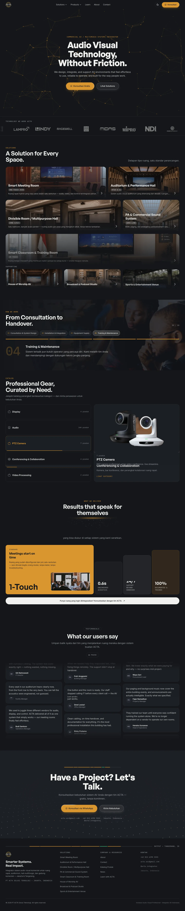
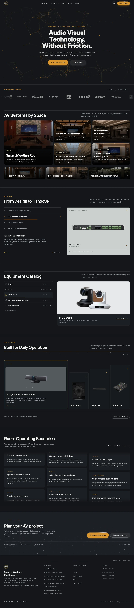
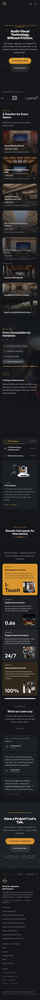

Engineering, with a clearer presentation.
Compare the production baseline with the dedicated English editorial refinement. The hero and section sequence remain. Room discovery, timed/manual workflow tabs, the catalog preview, delivery accordion, and marquees receive a more cohesive layout.
Local review only. Equipment images are genuine catalog photographs. The former placeholder endorsements are clearly labeled planning scenarios. No production deployment or live inquiry submission is included.
Desktop · 1440 px
Each frame scrolls independently. Select a capture to open the full-length image.




Mobile · 390 px
Review readable headings, complete content, visible controls, and the mobile presentation of delivery panels.



Tablet and narrow layouts
Intermediate widths show the catalog split and accordion proportions; the narrow capture provides a compact-screen content check.


Review the behavior too
On the running feature branch, use the catalog with a keyboard, change project stages, expand the delivery panels, pause the moving sections, and open the static brand/scenario lists. Screenshots establish visual presentation; the report records executed checks, remaining limitations, and final verification evidence.
Read the implementation report ↗